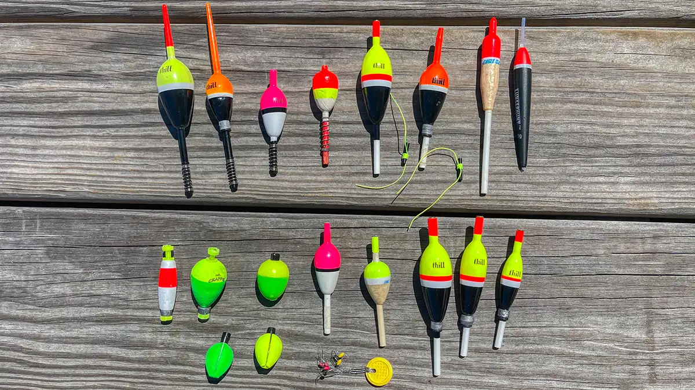
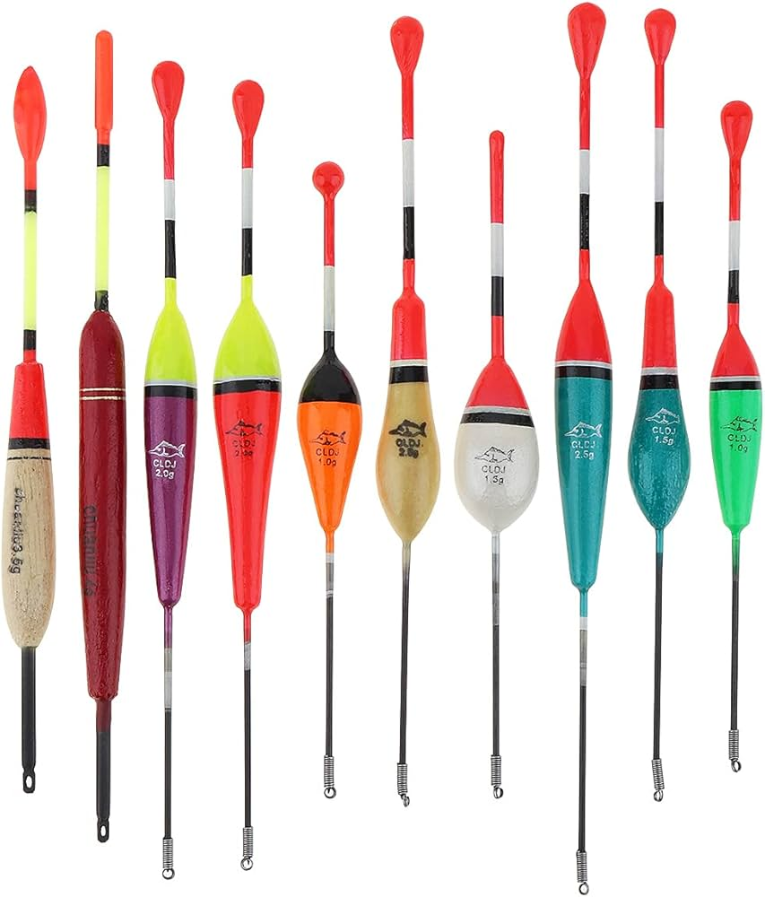

For many anglers, the first memory of fishing involves a bobber, a small, colourful orb on the water's surface promising the excitement of a sudden tug. Yet to relegate the float solely to beginners would be a mistake. From the banks of a farm pond to the technical demands of a river, the float is one of the most versatile and sophisticated tools in any angler's arsenal.

Chapter 1: The Anatomy of a Float
Not all floats are created equal. Choosing the right one is the first step to success. Floats serve three primary purposes: they suspend your bait at a precise depth, act as a bite indicator, and allow you to cast lightweight presentations that would otherwise be impossible.
1. The Fixed Float (Round Bobbers)
The classic red-and-white plastic bobber or round cork style, the quintessential "bobber."
- Pros: Excellent for beginners; highly visible; easy to cast; inexpensive.
- Cons: High resistance, when a fish bites, it feels the float's drag and often spits the bait. Poor performance in wind or current.
- Best for: Panfish (bluegill, sunfish), small bait like worms or crickets, fishing with kids.
2. The Slip Float
The most versatile float system for deeper water. It slides freely on the line, stopped by a small bobber-stop knot tied above it.
- Pros: Fish at depths far beyond your rod length (15–20 feet); minimal resistance to a biting fish; casts easily. Available in balsa, plastic, and foam.
- Cons: Requires more complex rigging; bobber stops can slide if not tightened properly.
- Best for: Deep lakes, walleye, trout, catfish, and suspending bait for bass.
3. The Waggler
A staple of European coarse fishing, the waggler is a slender, cigar-shaped float attached only at its bottom, designed for still-water finesse.
- Pros: Extremely sensitive; can be "shotted" precisely to detect the lightest bites; casts long distances.
- Cons: More complex to set up; requires split shot to balance correctly.
- Best for: Finicky trout, panfish, or perch in calm conditions.
4. The Stick Float
Designed for rivers, the stick float is attached at both top and bottom, allowing it to drift naturally with the current, the tool of choice for "trotting" bait downstream.
- Pros: Excellent control in moving water; allows a drag-free drift; highly sensitive.
- Cons: Requires constant line management; not suitable for still water.
- Best for: River fishing for trout, grayling, chub, and roach.

Chapter 2: Essential Rigging
The way you attach your float and add weight dictates your success. The goal is a balanced system, sensitive enough to show a bite, weighted enough to cast.
The Basic Fixed Float Rig (Beginners)
- Slide the Bobber On: Thread your line through the eyelet at the bottom of the float.
- Add Weight: Crimp one or two split-shot sinkers onto the line about 6–12 inches above the hook. The weight should make the bobber sit upright with only the top "signal" portion above the water.
- Tie on the Hook: Use an Improved Clinch Knot. A small hook (size 6–10) is best for panfish.
The Slip Float Rig (Deep Water)
- Bobber Stop: Thread a bobber stop knot onto your mainline.
- Bead: Slide a small plastic bead onto the line, this prevents the knot from jamming inside the float.
- Slip Float: Slide your float onto the line.
- Weight: Use a slip shot or small rubber-core sinker just above the swivel.
- Swivel: Tie a small swivel to the mainline to stop the float from sliding to the hook.
- Leader: Tie a 2–4 foot leader of lighter line to the other end of the swivel, then tie on your hook.
Balancing the Rig: For still water, the float should sit with most of its body submerged, only the brightly coloured tip (the "sight tip") visible above the surface. Even a single split shot can make the difference between detecting a bite or missing it entirely.
Chapter 3: Setting the Depth
Presenting your bait at the right depth is where the magic happens.
The Golden Rule: If you're not snagging bottom occasionally, you're not deep enough.
- Start Shallow: Set your float so the bait hangs 1–2 feet below it. If no bites after a while, the fish are likely deeper.
- Go Deeper: For fixed floats, slide the float up the line. For slip floats, slide the bobber stop up.
- Find the Bottom: Keep increasing depth until your float behaves erratically, gets pulled under, or your hook comes back with weeds or mud.
- Adjust: Once you've found the bottom, bring the bait up 6–12 inches. Most feeding fish sit just off the bottom, not directly on it.
Chapter 4: Bait Selection and Hooking
Live Bait
- Worms: The universal bait. Thread a nightcrawler so the tail dangles freely, or use a small piece for panfish. The worm's movement is a powerful attractor.
- Minnows: Ideal for bass, walleye, and trout. Hook a live minnow through both lips for a natural swimming presentation, or behind the dorsal fin.
- Crickets & Grasshoppers: Top choice for sunfish and trout in summer. Hook them through the collar (the shell behind the head) to keep them alive and kicking.
Artificial Baits
- Soft Plastics: Small grubs or tubes on a jig head fished under a slip float, a deadly combination for crappie.
- Dough Baits: PowerBait and similar dough baits are formulated for stocked trout. Mould a small ball around a treble hook. The buoyancy of the bait helps suspend the hook perfectly under a slip float.
- Fly Fishing with a Float: Using a strike indicator (a foam or yarn float) to suspend a nymph is a fundamental trout-fishing technique in rivers.
Chapter 5: Reading the Bite
A bobber doesn't just "go under." Learning to interpret its movements will dramatically increase your hookup rate.
- The Slap & Drop: A quick, violent slap and the float disappears. This is often a predator like bass or pickerel making a fast strike. Wait one second, then set the hook.
- The Slow Submerge: The float slowly sinks with minimal commotion, a classic sign of a catfish or large bluegill moving off with the bait. Count "one-one-thousand," then set the hook firmly.
- The Wanderer: The float moves sideways across the surface, contrary to wind or current. A fish has taken the bait and is swimming with it. Set the hook immediately.
- The Flutter: The float bobs up and down erratically, a small fish pecking at the bait, or a larger fish mouthing it. Don't set the hook on the bobs; wait for a solid, committed pull.
- The Upward Pop: The float pops upward and lies flat. A fish picked up the bait and swam toward you, reducing tension on the line. Reel in the slack and set the hook.

Chapter 6: Advanced Techniques
Trotting (River Fishing with a Stick Float)
Trotting is the art of presenting bait in a current so it drifts naturally, like a piece of food carried downstream.
- Setup: Use a stick float attached at both the top and bottom.
- Mending the Line: Use your rod tip to lift the line off the water and reposition it upstream, this prevents drag from pulling the float unnaturally.
- The Drift: Cast slightly upstream. Follow the float with your rod as it drifts, and continuously mend your line for a drag-free presentation. The strike often comes on the "drop" as the bait sinks through a current seam.
Suspending for Pelagic Fish
For crappie, landlocked salmon, or lake trout that suspend in deep water, a slip float is essential.
- Use Electronics: A fish finder helps pinpoint the depth at which fish are holding (e.g., 18 feet down in 30 feet of water).
- Set the Stop: Set your bobber stop so your bait hangs precisely at that depth.
- Long Casts: Cast away from the boat and use the wind to slowly drift, covering water at the exact depth the fish prefer.
Chapter 7: Common Mistakes and How to Fix Them
- Too Much Weight: If your float lies on its side or sinks, you have too much split shot. Remove weight until the float sits upright with only the tip exposed.
- Too Little Weight: If your float bounces around on the surface, it's not sensitive. Add a small split shot or move existing weight closer to the hook.
- Bait Too Close to the Weight: If your split shot is an inch above the hook, you're presenting an unnatural, stiff bait. Move the shot up at least 6–12 inches from the hook to allow the bait to move freely.
- Striking Too Early: The most common mistake. Wait for the float to commit. A momentary dip is often a fish testing the bait, patience pays off.
- Ignoring the Wind: Wind can create slack in your line, making it impossible to feel subtle float movements. Keep the line between your rod tip and float tight, but not so tight you drag the float.
Putting It All Together
Float fishing is a beautiful paradox: a simple concept that offers endless complexity. It can teach a child the joy of a first bluegill nibble while simultaneously challenging a seasoned angler to master the nuanced drift of a stick float through a steelhead run.
The float is more than just a bite indicator, it is a depth finder, a delivery system, and a window into the underwater world. By choosing the right float, balancing your rig, and learning to read the subtle language of the bite, you transform a passive experience into an active, engaging pursuit. Whether you're watching a bright red-and-white bobber on a quiet pond or guiding a waggler through a gentle current, you're practising one of the oldest and most rewarding forms of angling.

Montreal's freshwater fishing community, sharing techniques, spots, and stories from the water since 2020.